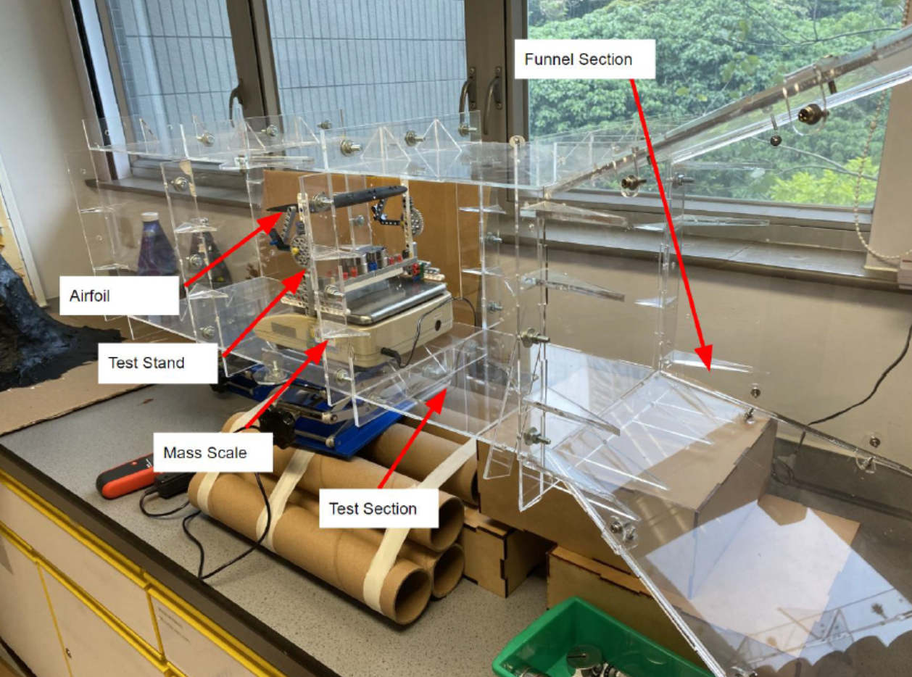

Project Overview #
For my IB extended essay I decided to explore my passion for engineering and aeronautics though investigating the effects of vortex generators on the lift profile of a 737 wing.
I assembled a wind tunnel using laser cut acrylic pannels, and flow regulators made from cardboard tubes.
Wind Tunnel Setup #
I designed and 3D printed several custom airfoils with different vortex generator configurations and tested them in the tunnel, and compared the results against a CFD simulation I set up using AutoDesk CFD.
Lift Profile for 3 VG Configuration #